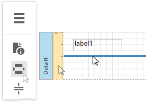
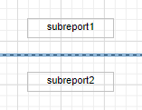
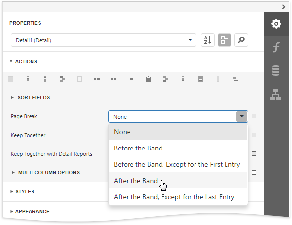

Page Break
The Page Break control's sole purpose is to insert a page delimiter at any point within a report.
You can add this control by dragging the Page Break item from the Toolbox onto the report's area.

This control is visually represented by a short line attached to the report's left margin.
The Page Break control is useful when you need to insert a page break between controls within a report band (for example, to divide subreports so that the second subreport starts printing on a new page).

You can also insert a page break before or after a specific report band using the band's Page Break property.
